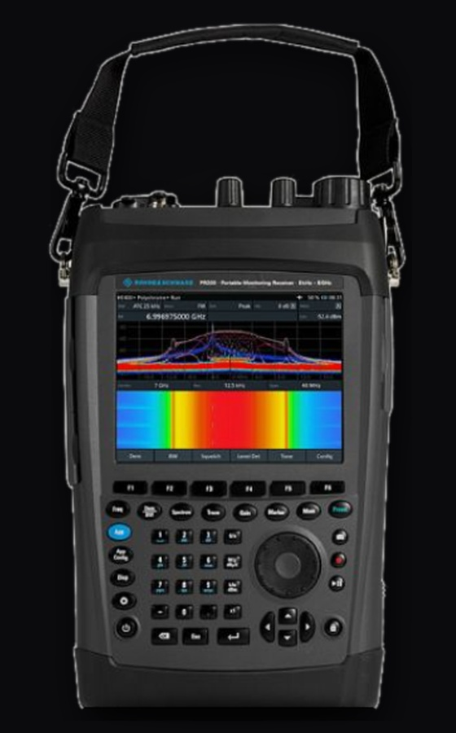
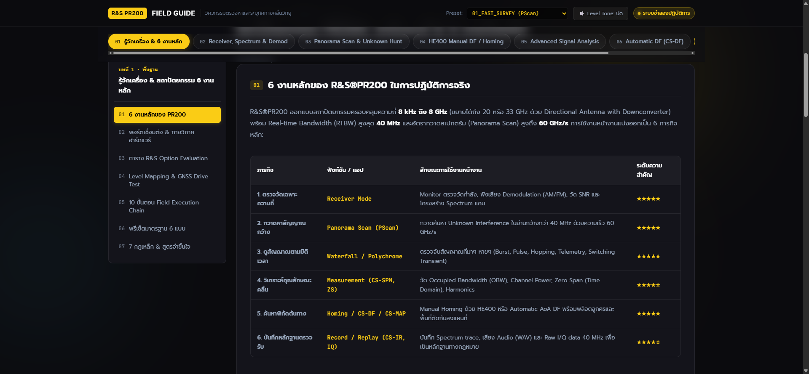

01 6 งานหลักของ R&S®PR200 ในการปฏิบัติการจริง
R&S®PR200 ออกแบบสถาปัตยกรรมครอบคลุมความถี่ 8 kHz ถึง 8 GHz (ขยายได้ถึง 20 หรือ 33 GHz ด้วย Directional Antenna with Downconverter) พร้อม Real-time Bandwidth (RTBW) สูงสุด 40 MHz และอัตรากวาดสเปกตรัม (Panorama Scan) สูงถึง 60 GHz/s (@ 1 MHz resolution) การใช้งานหน้างานแบ่งออกเป็น 6 ภารกิจหลัก:
| ภารกิจ | ฟังก์ชัน / แอป | ลักษณะการใช้งานหน้างาน | ระดับความสำคัญ |
|---|---|---|---|
| 1. ตรวจวัดเฉพาะความถี่ | Receiver Mode | Monitor ตรวจวัดกำลัง, ฟังเสียง Demodulation (AM/FM), วัด SNR และโครงสร้าง Spectrum แคบ | ★★★★★ |
| 2. กวาดหาสัญญาณกว้าง | Panorama Scan (PScan) | กวาดค้นหา Unknown Interference ในย่านกว้างกว่า 40 MHz ด้วยความเร็วสูงสุด 60 GHz/s (@ 1 MHz resolution) | ★★★★★ |
| 3. ดูสัญญาณตามมิติเวลา | Waterfall / Polychrome | ตรวจจับสัญญาณที่มาๆ หายๆ (Burst, Pulse, Hopping, Telemetry, Switching Transient) | ★★★★★ |
| 4. วิเคราะห์คุณลักษณะคลื่น | Measurement (CS-SPM, ZS) | วัด Occupied Bandwidth (OBW), Channel Power, Zero Span (Time Domain), Harmonics | ★★★★☆ |
| 5. ค้นหาพิกัดต้นทาง | Homing / CS-DF / CS-MAP | Manual Homing ด้วย HE400 หรือ Automatic AoA DF พร้อมพล็อตลูกศรและพื้นที่ตัดกันลงแผนที่ | ★★★★★ |
| 6. บันทึกหลักฐานตรวจรับ | Record / Replay (CS-IR, IQ) | บันทึก Spectrum trace, เสียง Audio (WAV) และ Raw I/Q data 40 MHz เพื่อเป็นหลักฐานประกอบการวิเคราะห์ บันทึกประวัติ หรือจัดทำรายงานทางเทคนิค (Technical Audit Trail) | ★★★★☆ |
02 กายวิภาคเครื่องจริง & แอนิเมชั่นปุ่มกดเชิงโต้ตอบ (Interactive Hardware Console)
R&S®PR200 ออกแบบด้วยปรัชญา Direct Knob & Dedicated Hardkey Operation เพื่อให้ผู้ตรวจการสามารถควบคุมและตั้งค่าพารามิเตอร์สำคัญได้ในคลิกเดียวแม้อยู่กลางแดดจัด สวมถุงมือปฏิบัติการ หรือสะพายเครื่องเดินเท้าสำรวจภาคสนาม คุณสามารถนำเมาส์ไปชี้หรือคลิกที่ปุ่มและพอร์ตจริงบนตัวเครื่องด้านล่างนี้ เพื่อดูหน้าที่ทางวิศวกรรม ขั้นตอนใช้งาน และทดลองสั่งการหน้าจอจำลองได้ทันที:

ปุ่มกดฮาร์ดแวร์แถวบนสำหรับเข้าสู่พารามิเตอร์การวัดหลักได้ทันที ตอบสนองฉับไว ออกแบบมาให้กดได้แม่นยำแม้ขณะสวมถุงมือปฏิบัติการภาคสนาม
- กด [Freq]: กำหนดความถี่ Center Frequency, Start/Stop Freq, หรือเลือกตารางช่องสัญญาณ
- กด [Span]: ปรับความกว้างแถบสเปกตรัมที่แสดงผล (ตั้งแต่ 1 kHz จนถึง Real-time Bandwidth 40 MHz)
- กด [Dem BW]: เลือกแบนด์วิดท์ตัวกรองเสียง (เช่น 150 kHz สำหรับ FM, 9 kHz สำหรับ AM, 300 kHz สำหรับดิจิทัล)
- กด [Demod]: เลือกชนิดการถอดรหัสเสียง (FM, AM, Pulse, USB, LSB, CW, IQ)
- กด [App]: เปิดหน้าต่างเลือกแอปพลิเคชัน (Receiver, Polychrome, PScan, MScan, FScan, Level Mapping)
03 คู่มือควบคุมปุ่มกดจริง & วิธีตั้งค่า 7 เวิร์กโฟลว์หลัก (Real Controls Reference & 7 Field Workflows)
การปฏิบัติงานภาคสนามต้องการความรวดเร็วและแม่นยำสูง ผู้ตรวจการจำเป็นต้องจำตำแหน่งปุ่มกดและลำดับคำสั่ง (Key Sequences) ได้อย่างแม่นยำ โดยตัวเครื่อง PR200 แบ่งโซนควบคุมออกเป็น 5 โซนหลัก:
| โซนควบคุม | ปุ่มและอินพุตในโซน | หน้าที่หลักทางวิศวกรรม | ลักษณะการตอบสนอง |
|---|---|---|---|
| 1. Top-Panel Knobs & Ports | พอร์ต RF IN (50 Ω Snap-N/N-type), Top Tuning Knob, Function Knob (Push MGC/Squelch/Tone), Volume, Headphone Jack 3.5mm | กวาดจูนความถี่หลัก เลื่อนสเกล ตัดเสียงซ่า (Squelch) และปรับระดับเสียงทางหูฟังได้คล่องตัวขณะสะพายเครื่องหรือถือมือเดียว | หมุนปรับต่อเนื่องแบบ Real-time พร้อมปุ่มกดกึ่งกลางสลับพารามิเตอร์ |
| 2. Top-Row Function Keys | Freq Dem Spectrum Trace Gain Marker Meas Preset | เข้าถึงพารามิเตอร์การวัดหลักทั้ง 8 กลุ่มได้ในคลิกเดียวโดยไม่ต้องเปิดเมนูซ้อนลึก พร้อมปุ่ม Preset คืนค่าพื้นฐานทันที | เรียกแถบคำสั่งย่อยและพารามิเตอร์มาแสดงบน Dynamic Softkeys F1–F6 ทันที |
| 3. Dynamic Softkeys F1–F6 | F1 ถึง F6 (ใต้หน้าจอ 6.5" VGA ตรงตำแหน่ง Bezel) | เปลี่ยนหน้าที่ตามบริบทเมนู (Context-Sensitive Mapping) ควบคุมคำสั่งย่อยของแอปพลิเคชันหรือพารามิเตอร์ที่กำลังเลือก | กดเลือกฟังก์ชันย่อยตามป้ายกำกับบนจอ LCD เหนือปุ่มนั้นๆ |
| 4. Left Vertical Column | App (ปุ่มกลมสีฟ้า), App Config, Disp, Step, Power (พร้อมไฟ LED) | สลับแอปพลิเคชันหลัก (Receiver, Polychrome, PScan, MScan, FScan, Level Mapping), คอนฟิกระบบลึก (Dual VFO), ปรับขนาดก้าวความถี่ และควบคุมพลังงาน | กดเปิดกล่องโต้ตอบเลือกแอป หรือสลับโหมดหน้าจอทันที |
| 5. Rotary, History & Keypad | Front Precision Rotary + Enter, Play/Pause ▶|| (History Buffer), REC, D-Pad 4 ทิศ, แป้นพิมพ์ตัวเลข 0–9, แป้นหน่วยวิศวกรรมตรง (GHz/n MHz/µ kHz/m x1/Hz/dBm), ปุ่ม 📷 Screenshot, และ Lock 🔒 (Stealth Mode) | ป้อนค่าตัวเลขความถี่พร้อมหน่วยเสร็จในคลิกเดียว หยุด/เล่นย้อนหลังสเปกตรัม (History Replay) เพื่อวิเคราะห์สัญญาณ Burst, บันทึกข้อมูลลง SD Card และล็อกเครื่องป้องกันสัมผัสพลาด | หมุนพร้อมแรงต้านละเอียด (Tactile Click), ป้อนตัวเลขและเปลี่ยนความถี่ทันทีเมื่อกดปุ่มหน่วย |
- กดปุ่ม Power 1 ครั้ง: เครื่องจะทำ Self-test และบูตเข้าหน้าจอหลักภายใน ~35 วินาที
- สังเกตไฟ LED: สีเขียวค้าง = ระบบพร้อมทำงาน / สีกะพริบ = แบตเตอรี่กำลังชาร์จ
- ตรวจไอคอนแบตเตอรี่มุมขวาบน: แบตเตอรี่ Li-Ion 6.4 Ah จ่ายพลังงานต่อเนื่องได้เฉลี่ย 3 ถึง 3.5 ชั่วโมง
- การเปลี่ยนแบตเตอรี่แบบไม่ดับเครื่อง (Hot-Swap): เสียบอแดปเตอร์ไฟ DC แล้วปลดสลักถอดแบตเตอรี่ก้อนเดิมออก สลับใส่ก้อนใหม่ได้ทันทีโดยไม่ต้องปิดเครื่อง
- กดปุ่ม App บนแถวบน: หน้าจอจะแสดงเมนู Application Selection
- หมุนลูกบิด Front Rotary Knob หรือกดปุ่มลูกศรเพื่อเลื่อนไฮไลต์ไปยังแอปที่ต้องการ
- กดปุ่มกึ่งกลางลูกบิด OK เพื่อยืนยัน หรือกดปุ่ม Softkey ใต้จอที่ตรงกับแอปนั้น
- การสลับแอปอย่างรวดเร็วผ่าน Softkey: F2=Receiver, F3=Polychrome, F4=PSCAN, F5=MSCAN, F6=สลับแถว Softkey ถัดไป
- กดปุ่ม Freq บนแถวบน → กด Softkey F1 (Center Freq)
- กดตัวเลขบนแป้นพิมพ์ เช่น ต้องการตั้ง 103.5 MHz ให้กด: 1 0 3 . 5
- กดปุ่มหน่วย MHz ค่าความถี่จะถูกตั้งทันทีโดยไม่ต้องกดปุ่ม Enter ซ้ำ!
- การกวาดความถี่ละเอียดภาคสนาม: ใช้มือข้างที่ว่างหมุน Top Tuning Knob ด้านบนตัวเครื่องเพื่อเลื่อนความถี่ขึ้น-ลงทีละ Step ได้อย่างคล่องตัวขณะสะพายเครื่อง
- กดปุ่ม Dem BW → กด Softkey F1 (BW) → หมุน Rotary เลือกขนาดแบนด์วิดท์ (เช่น 150 kHz สำหรับ FM, 9 kHz สำหรับ AM)
- กดปุ่ม Demod → กด Softkey หรือหมุนเลือกระบบถอดรหัสเสียง (FM, AM, Pulse, USB, LSB, CW)
- หมุนลูกบิด Volume ด้านบนขวาเพื่อเปิดเสียงลำโพงหรือหูฟัง
- การปรับ Squelch: กดปุ่มกึ่งกลาง Function Knob ด้านบนเพื่อสลับไปที่โหมด Squelch แล้วหมุนปรับระดับ dBm ให้อยู่เหนือ Noise Floor 3–5 dB เพื่อตัดเสียงซ่าเมื่อไม่มีสัญญาณ
- ขณะอยู่ในแอป Receiver (FFM) ให้กดปุ่ม App Config
- เปิดฟังก์ชัน Dual VFO เพื่อให้มีตัวรับสัญญาณจำลอง 2 ชุด: VFO A และ VFO B
- กำหนดความถี่และแบนด์วิดท์ของ VFO A (เช่น สัญญาณ Uplink 138.500 MHz) และ VFO B (เช่น สัญญาณ Downlink 143.200 MHz)
- กดสลับฟังเสียงและตรวจสอบสเปกตรัมระหว่างสองความถี่ได้ทันทีในคลิกเดียว เหมาะสำหรับงานตรวจสอบสถานีทวนสัญญาณ (Repeater) หรือเปรียบเทียบคลื่นรบกวนกับคลื่นปกติ
- ต่อสาย Snap-N เข้าพอร์ต RF IN และต่อสาย Push-Pull ODU เข้าพอร์ต Aux 1
- เครื่องจะตรวจพบโมดูลสายอากาศ (Module Auto-Detection) และอ่านทิศทางขั้วคลื่น (Polarization V/H) อัตโนมัติ
- เปิด/ปิด LNA: กดปุ่ม Toggle บนด้ามเสา HE400 เพื่อเปิด LNA (+13 dB typ., ไฟ LED สีน้ำเงิน) สำหรับคลื่นอ่อน หรือปิด LNA (ไฟเขียว) เมื่ออยู่ใกล้เสาส่งแรง
- กวาดเสาหาทิศทางที่สัญญาณแรงสุด (Peak Level) แล้ว เหนี่ยวไกปืน Trigger 1 ครั้ง บนด้ามเสาเพื่อบันทึกมุมเข็มทิศ (Azimuth) และพิกัด GPS ลงแผนที่ Triangulation ทันที
- เปิด Stealth Mode: กดปุ่ม Lock 1 ครั้ง → เลือก Stealth Mode: หน้าจอ LCD และไฟ LED ทุกดวงจะดับสนิท และล็อกปุ่มกดทั้งหมด เหมาะสำหรับการตรวจการลับเวลากลางคืน
- ⚠️ วิธียกเลิก Stealth Mode ฉุกเฉิน: ต้องกดปุ่ม Lock ติดกัน 3 ครั้งอย่างรวดเร็ว (Triple-Click) หน้าจอจึงจะสว่างกลับมา
- ⚠️ ขั้นตอนคืนค่าโรงงานฉุกเฉิน (Factory Reset 4s): ในกรณีที่เครื่องมีอาการค้างหรือค่าคอนฟิกผิดพลาด ให้เปิดเครื่องแล้วกดปุ่ม Power ค้างไว้ 4 วินาที เครื่องจะรีเซ็ตค่าทั้งหมดกลับสู่ค่าโรงงานและคืนแอป Receiver มาที่ Softkey F2 อัตโนมัติ
04 กายวิภาคฮาร์ดแวร์ พอร์ตเชื่อมต่อ และการจ่ายพลังงาน
การต่อสายและพอร์ตต่างๆ บนตัวเครื่อง PR200 ต้องเข้าใจขีดจำกัดเพื่อป้องกันความเสียหายของ Front-end:

| พอร์ต / อินเตอร์เฟซ | ชนิดหัวต่อ (Connector) | ข้อกำหนดทางเทคนิคและการใช้งานหน้างาน |
|---|---|---|
| RF IN (Primary) | N-type RF input compatible with Snap-N quick connector (50 Ω) | พอร์ตรับสัญญาณหลัก 8 kHz–8 GHz ออกแบบเป็นขั้ว N-type ที่รองรับทั้งหัวสวมเร็ว Snap-N และเกลียวมาตรฐาน N-connector ระดับสัญญาณสูงสุดห้ามเกิน +20 dBm (0.1 W) / 0 V DC (หากสงสัยสัญญาณแรงสูงกว่านี้ให้ต่อ External Attenuator ก่อนตรวจวัดเสมอ) |
| Aux 1 (DF / HE400) | ODU MINI-SNAP® Push-Pull | พอร์ตเชื่อมต่อสายด้ามเสา HE400 / HE400LP ส่งสัญญาณควบคุม GPS, Compass, Pre-amp ON/OFF, รับคำสั่งปุ่ม Trigger และอ่านรหัสโมดูลสายอากาศอัตโนมัติ |
| GNSS / GPS Antenna | SMA female | ต่อสายอากาศ GPS ติดตัวหรือสายอากาศ Active GPS บนหลังคารถ สำหรับ Geotagging และ Geostamp พิกัดใน Level Mapping และ Triangulation |
| Test Out (IF Out) | BNC female (IF Output) | ส่งออกสัญญาณ Intermediate Frequency (IF Output) สำหรับต่อพ่วงอุปกรณ์ประมวลผลหรือเครื่องวิเคราะห์ภายนอก (โปรดตรวจสอบค่าความถี่ IF และแบนด์วิดท์จากคู่มือประจำรุ่น) |
| Ref In / Ref Out | BNC female (10 MHz) | พอร์ตอ้างอิงความถี่ 10 MHz Reference Input/Output สำหรับ Sync สัญญาณ Clock กับระบบภายนอกเพื่อความแม่นยำสูงสุดในงานภาคสนาม |
| LAN / USB | 1 Gbit RJ-45 & USB 2.0 | พอร์ต Gigabit Ethernet รองรับ Raw I/Q Streaming แบนด์วิดท์สูงสุด 1 MHz (Demod), ควบคุมระยะไกลด้วย SCPI commands, และพอร์ต USB 2.0 Host สำหรับโอนย้ายไฟล์/อัปเดต |
| SD Card Slot | SD Card Interface | รองรับการ์ด SDHC (สูงสุด 32 GB) และ SDXC (สูงสุด 256 GB) ฟอร์แมตแบบ FAT32 หรือ exFAT สำหรับบันทึก I/Q, Audio, Traces และบรรจุแผนที่ OpenStreetMap |
| Smart Battery Bay | Li-Ion Battery Pack | แบตเตอรี่ Smart Li-Ion 10.8 V, 6.7 Ah (~72 Wh) ใช้งานต่อเนื่อง 3.5 ถึง 4 ชั่วโมง รองรับ Hot-swap สลับก้อนได้โดยไม่ต้องปิดเครื่องเมื่อต่อไฟ Adapter เลี้ยง |
| Audio Jack / Speaker | 3.5 mm Stereo & Internal | ส่งสัญญาณเสียง Demodulation (AM/FM/CW) และส่งสัญญาณ Level Tone (ความถี่เสียงแปรผันตาม dBm) สำหรับช่วยเล็งทิศทาง Manual Homing |
สำหรับการปฏิบัติการตรวจการลับหรือเวลากลางคืน สามารถกดปุ่ม Lock (เลข 1) แล้วเลือก Stealth Mode:
หน้าจอ LCD จะดับสนิท ไฟสถานะ LED ทุกดวงจะปิด และล็อกปุ่มกดทั้งหมดเพื่อความปลอดภัยสูงสุด
⚠️ วิธียกเลิก Stealth Mode: ต้องกดปุ่ม Lock ติดกัน 3 ครั้งอย่างรวดเร็ว (Triple-click Lock key) หน้าจอและปุ่มจึงจะกลับมาทำงานตามปกติ
การใช้งานแผนที่ในจุดไร้สัญญาณมือถือ ต้องใช้โปรแกรม `RsOsmWizard` บนคอมพิวเตอร์เพื่อดาวน์โหลดแผนที่ OpenStreetMap (OSM) ลงในการ์ด SD
📁 กฎเหล็กของโฟลเดอร์: ต้องบันทึกไฟล์แผนที่ลงในโฟลเดอร์ชื่อ `Maps` (ขึ้นต้นด้วยอักษรตัว M พิมพ์ใหญ่เท่านั้น) ในรูทของการ์ด SD หากตั้งชื่อเป็น `maps` ตัวพิมพ์เล็ก เครื่อง PR200 จะอ่านไฟล์แผนที่ไม่ขึ้น
05 ตารางระบบลิขสิทธิ์ซอฟต์แวร์ (R&S Options Evaluation Matrix)
ก่อนเริ่มปฏิบัติงาน ให้ตรวจสอบเมนู Setup → Options ว่าเครื่องเปิด License ฟังก์ชันใดไว้บ้าง:
| Option Code | ชื่อฟังก์ชัน | ความสามารถหลักในภาคสนาม | ความสำคัญ |
|---|---|---|---|
| PR200-Base | Receiver & Spectrum | การรับสัญญาณพื้นฐาน, สเปกตรัม, Waterfall, Peak Marker, Demodulation | ★★★★★ (จำเป็น) |
| CS-PS | Panorama Scan | กวาดหาสัญญาณกว้างด้วยความเร็วสูงสุด 60 GHz/s (@ 1 MHz resolution) พร้อมตั้งค่า Scan Resolution | ★★★★★ (จำเป็น) |
| CS-PC | Polychrome Spectrum | แสดงความหนาแน่นของสัญญาณด้วยสี (Color Persistence) แยก Co-channel Interference | ★★★★☆ |
| CS-SPM | Spectrum Measurement | วัด Occupied Bandwidth (β% 99% / x-dB), Channel Power, Adjacent Channel Power | ★★★★☆ |
| CS-ZS | Zero Span / Time Domain | เปลี่ยนแกนนอนเป็นเวลา วัด Pulse Width, Repetition Interval (PRI) และ Gated Spectrum | ★★★★★ (จำเป็น) |
| CS-DF | Direction Finding Software | ปลดล็อกระบบคำนวณทิศทางอัตโนมัติ Correlative Interferometer และ Polar Display | ★★★★★ (จำเป็น) |
| CS-MAP | Mapping & Triangulation | แสดงผล Bearing Lines, Intersection Target และ Level Heatmap บนแผนที่ OpenStreetMap | ★★★★★ (จำเป็น) |
| CS-IR | Internal Recording | บันทึก Spectrum Trace และเสียง Audio ต่อเนื่องในหน่วยความจำเครื่อง | ★★★★☆ |
| CS-IQ | I/Q Recording & Replay | บันทึก Raw I/Q data แบนด์วิดท์กว้างสูงสุด 40 MHz สำหรับวิเคราะห์ Modulation เชิงลึก | ★★★★☆ |
| CS-FS / MM | Field Strength / Modulation | แปลง dBm เป็น dBµV/m ตาม Antenna Factor และวิเคราะห์ AM/FM Modulation Index | ★★★☆☆ |
06 Level Mapping & GNSS Drive/Walk Test (การทำ Heatmap พื้นที่)
เมื่อเปิดออปชัน CS-MAP ร่วมกับสัญญาณ GPS หน้างานสามารถทำ Level Mapping (Drive Test ขับรถ หรือ Walk Test เดินสำรวจ) เครื่องจะบันทึก:
[ GNSS Latitude / Longitude ] + [ Center Frequency ] + [ Measured Power (dBm) ]
| ระดับความแรงสัญญาณ | การแสดงผลบนแผนที่ Heatmap | การตีความทางวิศวกรรมภาคสนาม |
|---|---|---|
| > -50 dBm | ● สีแดงเข้ม (Critical / Very Strong) | อยู่ในระยะประชิดแหล่งกำเนิด (Near-field / Line-of-sight) |
| -70 ถึง -50 dBm | ● สีส้ม / เหลือง (Medium-High) | สัญญาณหลักชัดเจน ลำคลื่นกำลังแพร่กระจายในทิศทางนี้ |
| -90 ถึง -70 dBm | ● สีเขียว (Normal Coverage) | สัญญาณระดับปกติที่เครื่องรับใช้งานได้ทั่วไป |
| < -90 dBm | ● สีฟ้า / น้ำเงิน (Fringe / Noise edge) | ขอบเขตสัญญาณจางหาย (Coverage boundary) หรือสัญญาณรั่วไหลต่ำ |
1. กวาดกว้าง (PScan) → 2. วาง Marker แตะ Peak → 3. Tune Receiver เข้าหา → 4. บีบ Span แคบ → 5. ลด RBW แยกช่อง → 6. สังเกต Waterfall ดูเวลา → 7. ปลด Squelch ฟัง Demod → 8. กด ATT +10 dB ตรวจ Overload → 9. หมุน HE400 หรือเปิด CS-DF หาพิกัด → 10. บันทึก IQ / Audio / Map เป็นหลักฐานประกอบการวิเคราะห์และบันทึกประวัติ (Technical Audit Trail)
08 พรีเซ็ตมาตรฐาน 6 แบบที่วิศวกรภาคสนามควรบันทึกไว้ใน PR200
เพื่อความรวดเร็วในการแก้ปัญหาสัญญาณรบกวนฉุกเฉิน ไม่ควรเสียเวลาตั้งค่าใหม่ทีละเมนู แนะนำให้เซฟ Preset 6 ชุดนี้ไว้ในเครื่อง (คลิกปุ่มเพื่อจำลองการโหลดค่า):
09 7 กฎเหล็กและสูตรคำนวณที่วิศวกร PR200 ต้องจำขึ้นใจ
| ลำดับ | กฎเหล็กภาคสนาม | หลักคิดทางวิศวกรรม & การนำไปใช้ |
|---|---|---|
| กฎข้อที่ 1 | Wide → Narrow | เริ่มจากการกวาดกว้าง (PScan) เพื่อจับภาพรวม ห้ามเปิดบีบแคบ (Narrow) ตั้งแต่แรกเพราะจะมองไม่เห็นภาพรวมและหลงทิศ |
| กฎข้อที่ 2 | Sensitive → Attenuate | ขณะอยู่ไกล (Far-field) ให้เปิด Sensitivity สูงสุด (Preamplifier ON / ATT 0 dB) แต่เมื่อเดินเข้าใกล้แหล่งส่ง ต้องทยอยเพิ่ม ATT เพื่อป้องกัน Front-end Saturation |
| กฎข้อที่ 3 | Spectrum → Waterfall → Polychrome | เมื่อเจอสัญญาณที่มาๆ หายๆ ให้ใช้ Waterfall ดูจังหวะเวลา และใช้ Polychrome ส่องหาสัญญาณซ้อนในช่องความถี่เดียวกัน |
| กฎข้อที่ 4 | Frequency → Time (Zero Span) | หากสงสัยสัญญาณ Pulse, Radar, หรือ TDD ให้เปลี่ยนแกน X จากความถี่เป็นเวลาด้วย Zero Span เพื่อวัด Pulse Width และ Duty Cycle |
| กฎข้อที่ 5 | Level → Homing → DF → Map | การหาพิกัดต้องเริ่มจากการเทียบระดับ dBm → ใช้เสา HE400 กวาดทิศ → ใช้ Automatic DF วัด AoA → พล็อต 3 จุดตัดลงบนแผนที่ |
| กฎข้อที่ 6 | สเปกตรัมแปลก = เพิ่ม ATT 10 dB ก่อน | อย่าเพิ่งด่วนสรุปยอดสัญญาณที่ปรากฏบนจอ ให้ทดสอบเพิ่ม RF ATT 10 dB การตอบสนองผิดสัดส่วนหลังเพิ่ม ATT (เช่น ยอดลดฮวบมากกว่า 10 dB หรือหายไป) เป็นข้อบ่งชี้สนับสนุนว่าอาจเกิดจาก Receiver Overload / IMD แต่ยังไม่ใช่ข้อพิสูจน์เด็ดขาด ต้องทวนสอบร่วมกับระดับกำลังขาเข้า (Input Level), เปิดใช้งาน Preselector/Filter, ทดสอบซ้ำ, เทียบเครื่องรับอีกเครื่อง หรือทำ Controlled Isolation ที่ได้รับอนุญาต |
| กฎข้อที่ 7 | ระดับสัญญาณสูง ≠ DF Quality สูง | เครื่องรับอาจได้ยินเสียงดัง (-60 dBm) แต่ถ้าคลื่นสะท้อน Multipath รุนแรงจน Phase เพี้ยน ระบบ DF จะชี้ทิศไม่ได้ (No Bearing) |